Maya Garcia
The Daily Commuter
Fourth-year who rides weekdays to class and a research lab. Knows the system's quirks and keeps other map and rideshare apps as backups.
“I need to know if my bus is actually on its way.”
Needs · N1 · N2
Case study · Product & UX · Shashank Navale
DetourRedesigning Gainesville's RTS transit app around the moment riders stop trusting it — for the UF students who make up about 70% of its riders.
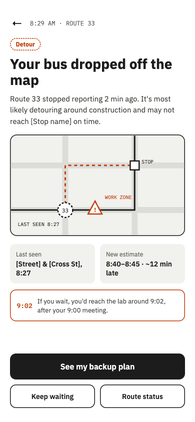
01 · The problem
RTS's app is supposed to show where every bus is so riders can time their trip. In practice, riders open it, don't trust what they see, and check a second app, or just ask whoever else is waiting at the stop.
1.1★
average across 235 App Store reviews, unusually low even for a transit app.
Vanishing buses
Trackers disappear from the map when a bus detours around campus construction, which happens often.
Prior knowledge required
You have to already know a stop number or route name. The map never shows the stops near you.
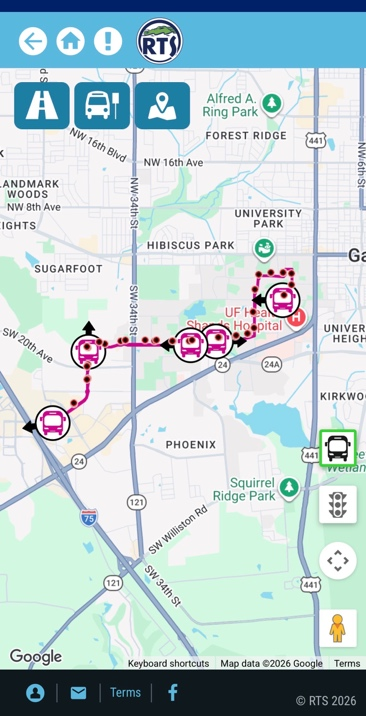
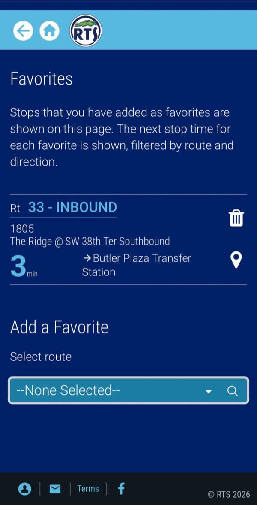
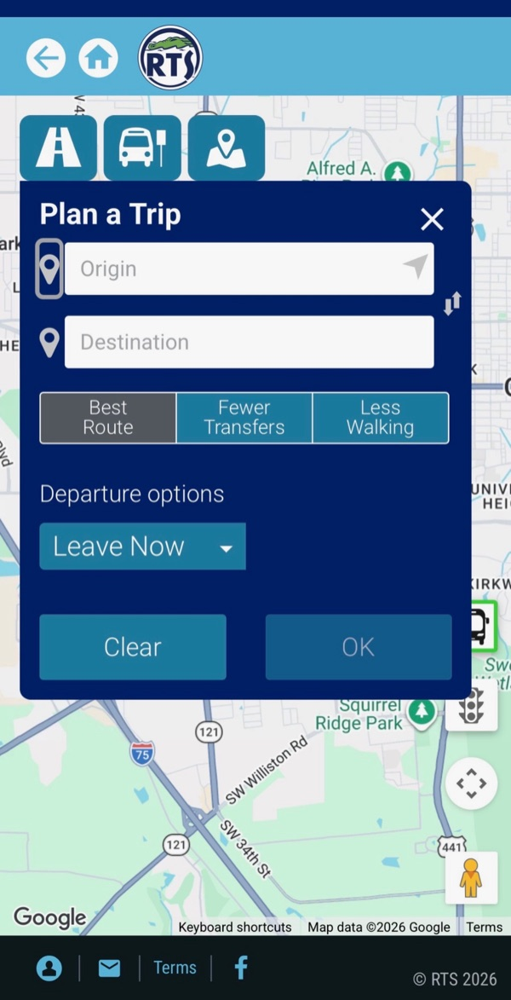
The real gap The GPS underneath works. What fails is the experience on top of it: riders get data, but not answers to "is my bus actually coming?"
02 · Research
I ran one-on-one interviews with five Gainesville riders, from daily commuters to occasional riders, then clustered the notes in an affinity diagram to find the needs behind the complaints.
“…designed in the 90s.”
Another rider was told her bus was 10–15 minutes away. After more than 20 minutes with nothing on the road, she gave up and paid for a Lyft to make it to class.
The Daily Commuter
Fourth-year who rides weekdays to class and a research lab. Knows the system's quirks and keeps other map and rideshare apps as backups.
“I need to know if my bus is actually on its way.”
Needs · N1 · N2
The Occasional Rider
First-year without a car who rides only when it's too far to walk, and finds the crowded map hard to read.
“Tell me what I'm looking at, and that I'll get there safely.”
Needs · N2 · N3 · N4
03 · The decision
I brainstormed 24 feature ideas, 12 for each persona, and scored each one from 1 to 10 on how New, Useful and Feasible it is (NUF). Ideas that totaled 22 or more advanced, and the strongest ones grouped into two concepts.
For Maya, the daily commuter · N1 · N2
Tells her what's happening with her bus before she's standing at the stop.
NUF 91
For Jordan, the occasional rider · N2 · N3 · N4
Destination first: say where you're going, get one clear route.
NUF 89
Concept score = sum of its four feature ideas (HeadsUp 22 + 23 + 23 + 23 · Where2 23 + 22 + 22 + 22)
It goes after the app's two biggest failures, wrong arrival times and buses vanishing from the map, which hit every rider every day. Because the margin was only two points, I didn't let the score decide alone: five potential riders reviewed both concepts, and their preferences matched the NUF ranking.
Its wins, destination search and plain-language directions, matter most to new riders. They build on the same live-tracking foundation, which makes them a natural second phase rather than a competing bet.
04 · The design
Maya has a 9:00 lab meeting. Here's how HeadsUp gets her there, first when everything goes right, then when her bus disappears. Tap any screen to enlarge it.
Path A · Bus on time
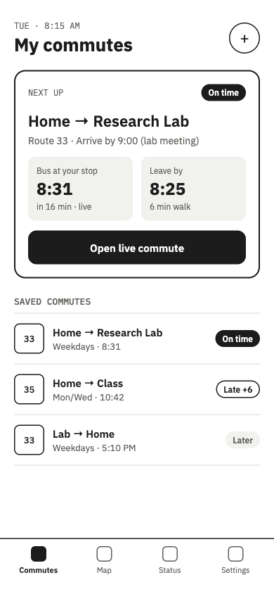
01 · 8:15
Her commute is waiting: live ETA, leave-by time, and an On-time tag up front.
N1
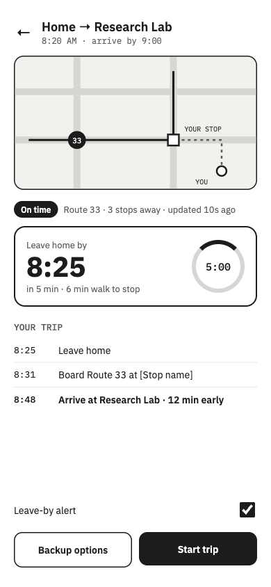
02 · 8:20
The countdown already includes her walk to the stop.
N1
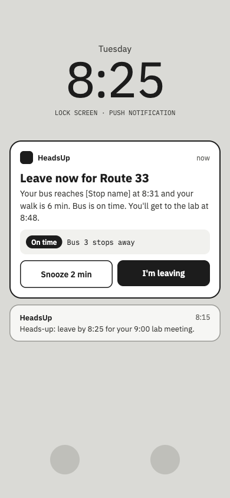
03 · 8:25
“Leave now” lands on her lock screen. No need to open the app.
N1
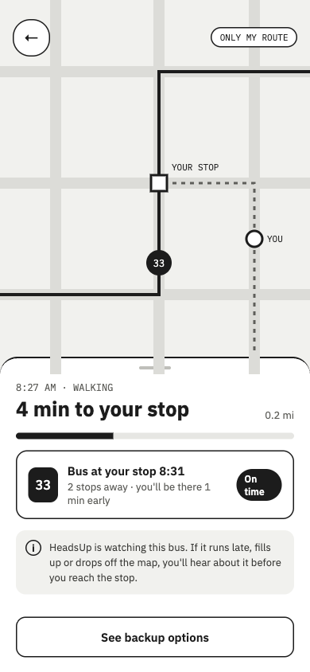
04 · 8:27
HeadsUp keeps watching the bus while she walks. The map shows only her route.
N1 · N2
Path B · Bus late or gone
05 · 8:29
Route 33 drops off the map. She sees where it was last seen, the likely detour, and what waiting would cost her.
N2
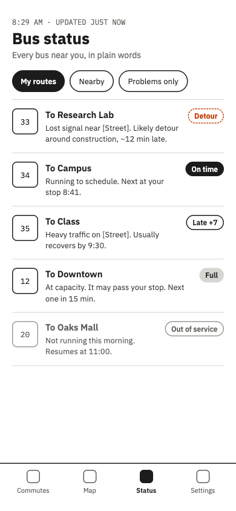
06 · Any time
Every bus carries a status: On time, Late, Full, Detour, or Out of service.
N2
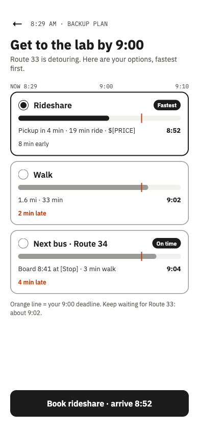
07 · 8:29
Rideshare, walking, and the next bus side by side, measured against her 9:00 deadline.
N2
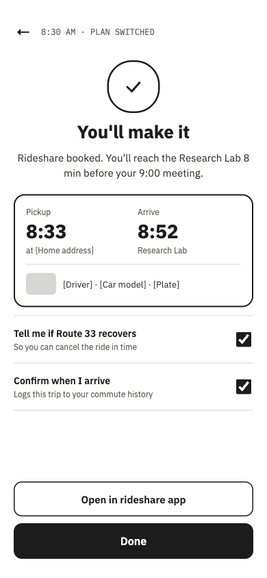
08 · 8:30
Ride booked, arriving 8:52, and she'll hear if Route 33 recovers.
N1 · N2
How it flows
The full wireflow: Path A when the bus is on time, Path B when it's late or gone, and where they meet.
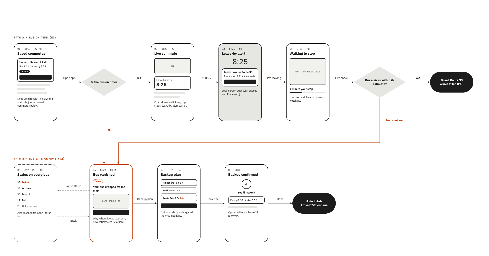
Tap to enlarge ↗05 · Where it stands
Validated
Five potential riders reviewed both concepts, and their preferences matched the NUF scoring, an early signal that riders would choose HeadsUp over today's app.
Next
What I learned
The hardest call wasn't finding ideas. It was choosing between two strong concepts two points apart. Tying the decision to the pain riders hit most often, and checking it with riders, made it a choice I could defend.